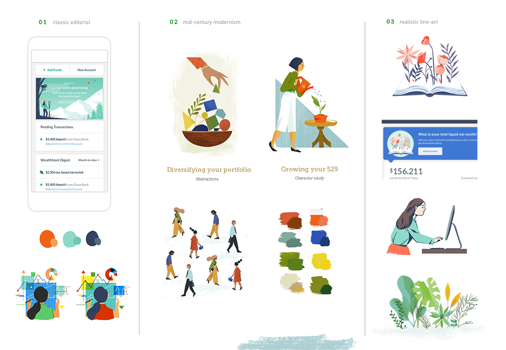
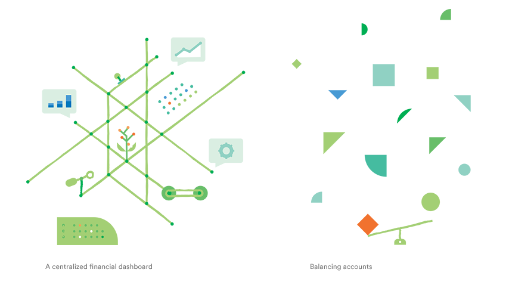
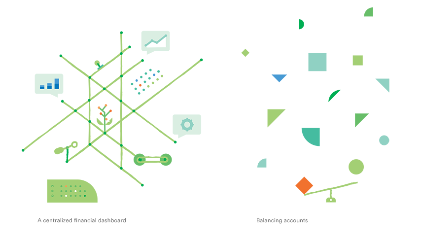

With guidance from the team, I developed their foundational illustration style and create 60+ illustrations for the product, building a system that serves as the first chapter of their illustration brand. Here's a look at our process.
Starting out, I explored three visual directions that interpreted these initial values, in bringing joy, warmth, and a relatable human touch to finance — a field that is typically very cold, dry, and even boring.
A few key directions quickly emerged, all centered around expressing complex financial topics cleverly with an editorial bent. In particular, we really gravitated towards a mid-century modernist inspired approach, as it tied in a sense of playfulness and unique quirkiness while still feeling professional and traditional.

Using our original marks as a starting point, I further finessed the style, focusing on simplifying color, execution (vector vs. hand-drawn, geometric vs. slightly imperfect), and tone (texture, shading) to create an overall more readable and mature aesthetic that was more cohesive with the UI. We liked how this approach could be grounded in solid, firm shapes but still have a quirky flair with an exagerrated hand gesture or detail out of place!

Illustrations depicting very technical concepts can tend to look cold and even stock when without some form of life present (eg. people, animals, event plants) — so incorporating a character-driven approach was important to project warmth and relatability. Using the above exploration as a starting block, I refined the characters' design to be less "blocky" and more fluid, within a more modern and bright palette.

A lot can be expressed through simple stylized illustration guidelines. For instance, all characters have high-waisted torsos (longer legs) and their feet are always standing on a plane (never flat), so they are always in motion — which builds a sense of constant forward movement and energy.


Characters are also intentionally abstracted, using the minimal number of geometric, angular shapes needed to express movement and personality! We intentionally chose to limit the number of details (ie. facial features, hands, etc) to keep the focus on the characters' movement.
Because this abstracted stylization, characters can also interact with simplified shapes borrowed from the UI to demonstrate complex financial topics.


 
